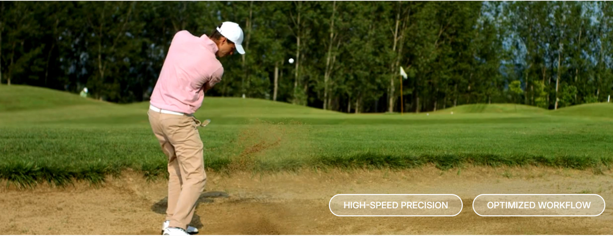

「標準フレームレート」の限界点と、物理現象を制御する解像度の競争
生産ラインの高速化に伴い、従来の標準的なフレームレートでは「不具合の瞬間の挙動」を捉えきれない事態が顕在化しています。真の歩留まり改善には、外観検査という枠を超えた「物理現象の可視化」へのパラダイムシフトが不可欠です。今、Luximaが提供する超高速センシングは、製造DXにおける競争優位の源泉として浮上しています。
マシンビジョンの世界において、グローバルシャッターによる歪みのない映像取得は「当たり前」の前提となりました。しかし、技術のコモディティ化は、同時に「見えているようで、見えていない」という新たな盲点を生んでいます。業界トレンドは、単なる「定常状態の監視」から、ミリ秒単位の物理現象を捉える「過渡現象の解析」へとシフトしています。

多くの企業が直面しているのは、歩留まりが低下した際、その原因を「後工程の検査」で特定しようとする構造的な遅延です。データが不十分なまま推測で設備調整を行うことこそが、自動化のROI（投資対効果）を頭打ちにしている最大の要因です。
標準的なカメラでは、不良発生時の微細な振動や応力変形がモーションブラーによって欠落します。
現象を捉えた時にはプロセスが先に進んでおり、補正信号を送っても「手遅れ」になるリスクです。
今後の製造現場における技術的優位性は、計測・フィードバック・制御をナノ秒〜マイクロ秒オーダーで統合できるか否かにかかっています。
最大9,000fps & BSI構造。UV領域までカバーし、肉眼で捉えられない「一瞬」をデータ化。
全画素同一タイミング露光。レーザー光源等との精密な連動により、物理現象を歪みなく固定。
情報を即座にフィードバックし、アクチュエーターを動かすまでの時間を極限まで短縮。
「現場にこれほどのスペックは不要ではないか」という認識は、急速に過去のものとなりつつあります。 超高速センシングは過剰投資ではなく、**「物理現象に対する制御の解像度を高めるためのインフラ」**です。
ボトルネック工程にのみこれらの超高速センサを配置する「階層型センシング戦略」こそが、DXによる徹底的な人員削減と、揺るぎない品質保証を実現する唯一の道です。